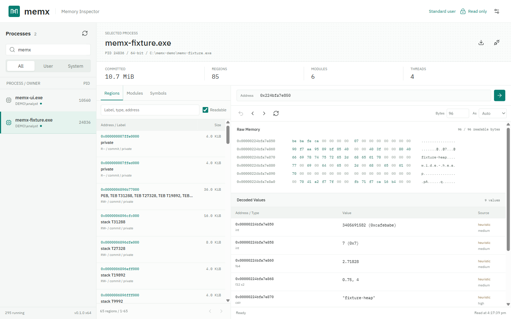
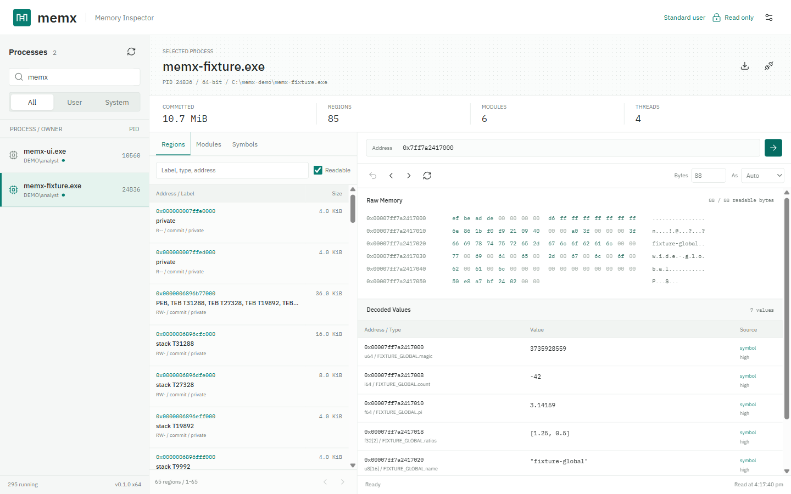
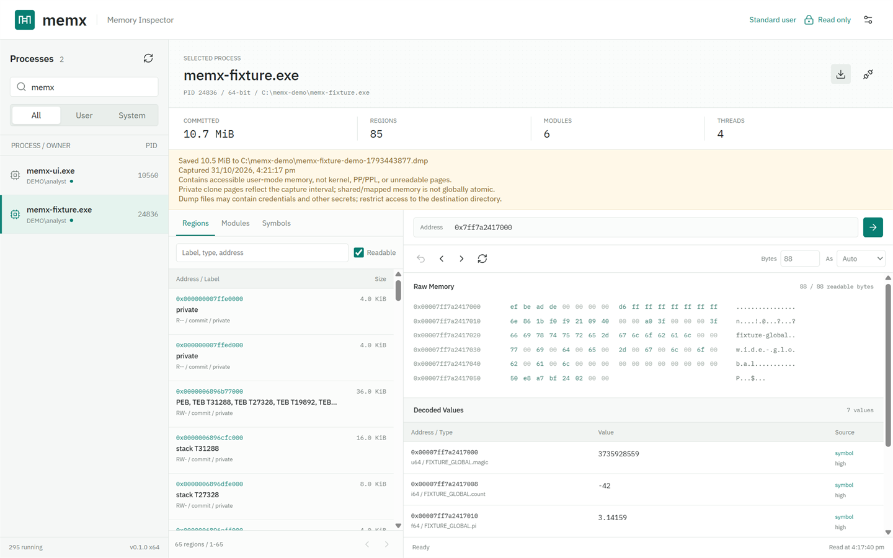
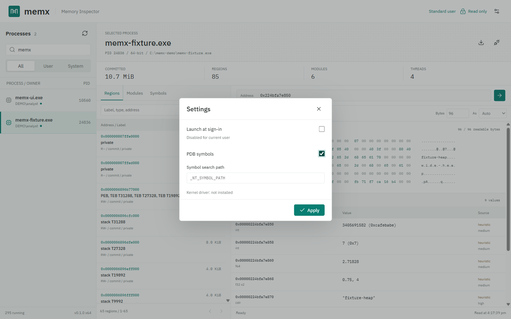
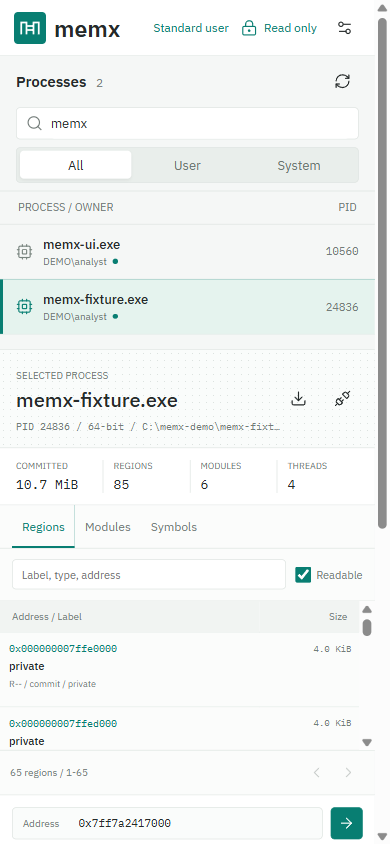

Every process, one list
User and system processes, with owner, session, and an access badge. Processes you cannot read stay listed with the reason.
memx lists every running process, maps its address space, and turns raw bytes into typed values. Each value shows whether it came from debug symbols, C++ type information, your choice, or a labeled guess.

Pick a process and start reading. memx only requests the Windows access it needs to inspect memory and never writes to the target.
User and system processes, with owner, session, and an access badge. Processes you cannot read stay listed with the reason.
Browse committed regions labeled as heaps, stacks, module sections, PEB, or mapped files. Jump to any module or PDB global.
Decode integers, floats, strings, GUIDs, timestamps, and pointers. Every value is tagged symbol, RTTI, user, or heuristic.
Pointers show where they land, such as a heap, a module, or a C++ class. Follow them with one click and step back through history.
Capture a full-memory .dmp through Windows Process Snapshotting. Open it in WinDbg; existing files are never overwritten.
One executable: launch it for the desktop app, or pass a command such as ps, read, or dump for scripting and JSON.
Screenshots use a demo process with known values and match your light or dark theme. User names and paths are anonymized.
Select a process, click a region, and memx reads it page by page. Unreadable bytes show as ??, so a gap is never mistaken for data.
u64, f64, or wstr
Turn on PDB symbols in Settings and enter module!symbol. Struct fields show their declared names and types.
_NT_SYMBOL_PATH syntax
Click the download icon next to the process name and choose where to save. memx clones the process memory first, then writes a standard minidump from that copy.

Choose whether memx starts with administrator rights when you sign in, and where it looks for PDB files.

In a narrow window, panes stack vertically, so memx remains usable beside a debugger or editor.
memx uses documented Windows APIs, and every request is size-limited.
memx opens the process with query and read access only. When run as administrator, it enables SeDebugPrivilege.
VirtualQueryEx walks the address space. Modules, thread stacks, heaps, and the PEB label the regions.
Reads are split by page and skip guard pages. Partial reads keep the bytes that are readable.
Symbols take priority, then RTTI, then heuristics. Each value records where its type came from.
Pass a command to memx-ui.exe to use the CLI. Add --json for machine-readable output.
# Run from an elevated PowerShell
$memx = 'C:\Program Files\memx\memx-ui.exe'
& $memx ps --filter 'notepad*' | Out-Host
& $memx regions --pid 1234 --readable | Out-Host
& $memx inspect --pid 1234 --addr 0x1f2a0000 | Out-Host
& $memx read --pid 1234 --addr 'app.exe+0x10' --as 'u32[4]' | Out-Host
& $memx search --pid 1234 --string 'hello' | Out-Host & $memx symbol --pid 1234 'kernel32!CreateFileW' | Out-Host & $memx globals --pid 1234 --module app.exe | Out-Host & $memx dump --pid 1234 --file 'D:\dumps\app.dmp' --json | Out-Host & $memx tui --pid 1234
The desktop executable does not keep PowerShell attached to it, so pipe CLI commands to Out-Host or redirect them to a file to receive their output and exit code.
Administrator rights let memx read more processes, but not all of them. memx does not bypass Windows protections.
The Rust toolchain version is set in rust-toolchain.toml. Pull requests are compiled and tested for x64 and x86; each merged pull request publishes a release.
git clone https://github.com/arteficent/memx.git cd memx npm ci npm run build # web assets embedded in the exe cargo test --features desktop-ui # run unit and integration tests npm run tauri -- dev # run with hot reload npm run tauri -- build # build the exe and installer npm run tauri -- build --target i686-pc-windows-msvc # x86 build
memx is dual-licensed under the MIT License and the Apache License 2.0. You may use, modify, and redistribute it under either license, at your option.
SPDX: MIT OR Apache-2.0. Copyright © 2026 Sourabh Singh. Unless you state otherwise, contributions you submit are dual-licensed under the same terms. IBM Plex fonts are under the SIL Open Font License 1.1, and Lucide icons are under the ISC License.